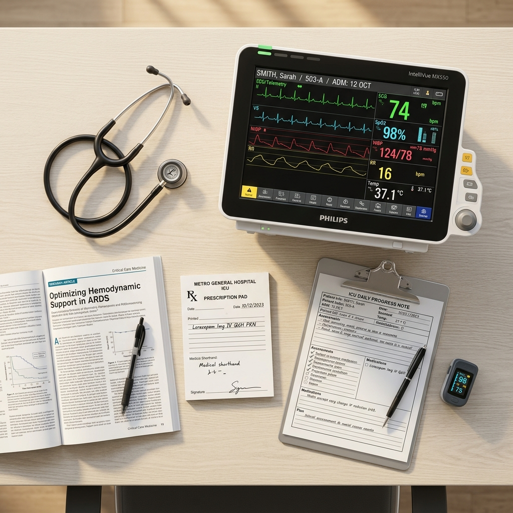

IV-01
ICU Management
Full clinical supervision of critically ill patients — fluid balance, sedation, organ support and daily goal-directed care planning.
High Acuity
MD, FNB (Intensive Care) · Board Certified Intensivist. Life support, ventilation and hemodynamic stability managed at the bedside — from the first minute of resuscitation to the day a patient steps down from the unit.
MCI Registration Number: MCI-CCM-2012-73892
Languages: English · Hindi · Kannada
Advanced intensive care, continuous monitoring and organ support for the most fragile hours of a patient's recovery.
Dr. Sarah Jenkins is a board-certified Intensivist with over 12 years of experience managing high-acuity patients — respiratory failure, cardiac emergencies, septic shock and complex post-operative recoveries. Her practice is built around titrated, protocol-driven treatment: every infusion, ventilator setting and pressure reading reviewed against the patient in front of her, not the average patient.
Known for swift decision-making and clear, unhurried family briefings, she leads multidisciplinary ICU teams that keep critical patients stable through the night and guide them safely back to the ward.
Life-support systems, targeted infusions and continuous physiological monitoring, delivered under strict clinical protocol.
Full clinical supervision of critically ill patients — fluid balance, sedation, organ support and daily goal-directed care planning.
Invasive and non-invasive airway support with ventilator settings tuned to lung mechanics and weaned as soon as it is safe to do so.
Continuous pressure and perfusion tracking with vasoactive drug titration to hold cardiovascular stability and protect target organs.
Immediate resuscitation, advanced cardiac life support and rapid triage coordination for severe trauma and time-critical emergencies.
Close monitoring and analgesia after high-risk surgery, with structured step-down once the patient is stable and self-supporting.
Early recognition bundles, source control and antimicrobial stewardship to reverse severe systemic infection before organs fail.
Critical care is won in small margins — a pressure trend caught early, a drip adjusted an hour sooner, a family kept genuinely informed.
Real-time tracking of oxygenation, perfusion and organ function, with trends reviewed on every round.
Protocol-driven life support and therapies deployed fast, then de-escalated the moment they are no longer needed.
Daily briefings in plain language, so families understand the plan and share in every major decision.

A disciplined, multi-stage protocol that keeps high-acuity patients safe at every handover.
Immediate triage, airway and hemodynamic evaluation, and first-line stabilisation on arrival.
Blood gas trends, laboratory panels and bedside imaging reviewed together to find the true driver.
Targeted organ support, titrated infusions and specialist medication under continuous review.
Gradual weaning, milestone tracking and a documented handover to the ward or home care team.
Questions about an admission, a transfer or a scheduled consultation? Reach the team directly.
Metro Intensivist Suite
3rd Floor, City General Hospital, 100 Feet Road,
Indiranagar, Bengaluru, Karnataka 560038
Feedback from patients and families cared for during critical hospitalisations.
Saved my father's life during severe respiratory distress. The diagnostic speed and the steady presence in the ICU were unmatched — someone explained every change to us before we had to ask.

The clarity we were given during my husband's post-operative recovery was a huge comfort. Extremely professional, deeply reassuring, and never rushed with our questions.

A true professional. The prompt handling of my mother's septic shock in the emergency wing made all the difference — treatment started while we were still filling out forms.

Very systematic approach. Complex telemetry and ventilator details were explained in simple terms, which helped us make the right medical choices as a family.

A look at the critical care environment where patients are monitored around the clock.